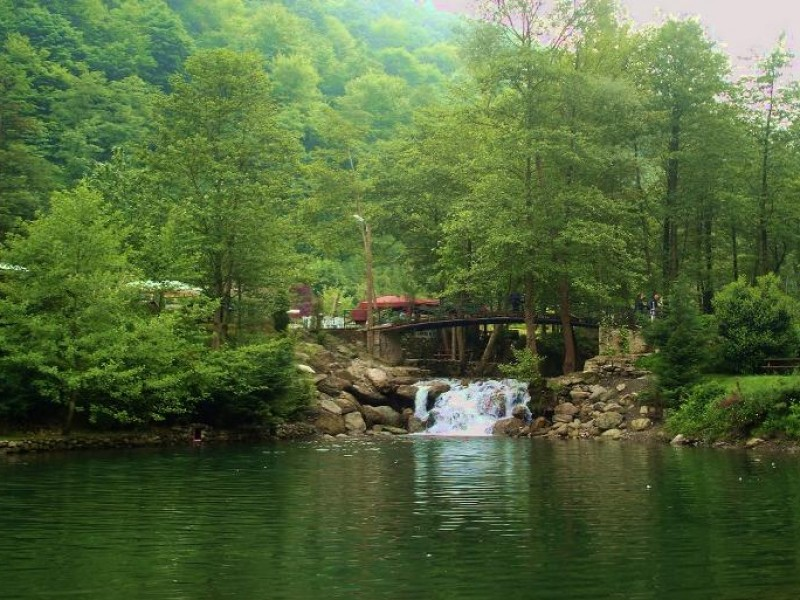

Sapanca Gölü ve çevresi içerdiği son derece çarpıcı doğal güzellikleri ve yoğun
yerleşim merkezlerinin ulaşabildiği bir konumda bulunması nedeniyle il merkezinin yanı sıra başta
İstanbul olmak üzere çevredeki büyük kentlerin özellikler hafta sonları rekreasyon ve konaklama amaçlı
taleplerine açık bir merkez niteliğindedir.
Sapanca GölüInün yüksekliklerindeki Arifiye Ormanı'nda güzel kamp ve piknik alanları bulunmaktadır.
Ulusal ve uluslararası sörf, yelken ve kürek müsabakalarının yapıldığı Sapanca Gölü bu organizasyonlarla
sportif amaçlı çok sayıda ziyaretçi çekmektedir.